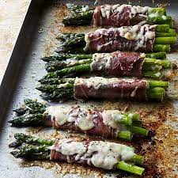

Proscuitto Wrapped Asparagus Spears

Description
These proscuitto wrapped asparagus spears will make your mouth water width
the rich and diverse flavours that it presents. The cured meat mixed with the spicy
havarti cheese is to die for. Works great as a party appetizer.
Ingredients
- Large package of proscuitto
- Bundle of fresh asparagus
- Medium package of jalepeno havarti cheese
- 2 tbsp olive oil
Steps
- Wash asparagus with water before using
- Cut asparagus into pieces about 3 inches long, be careful to not include root of asparagus
- Lay out proscuitto slice on a plate. Place a piece of havarti cheese on the proscuitto
- Lay the cut up piece of asparagus on top of havarti cheese, which is on top of proscuitto
- Roll up ingredients into spears
- Bake at 400 degrees fahrenheit with olive oil and then enjoy!
Back to home